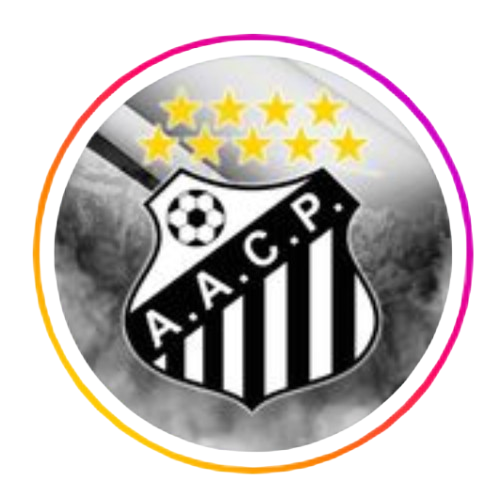
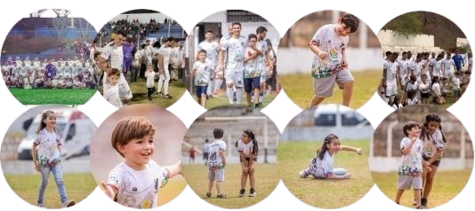

Nossos Parceiros
Associação Atlética Cimento Portland - O futebol amador de Cajamar passa pelo Portland; agremiação antiga, tradicional e muito vencedora

⚽ Fundado em 16 de junho de 1932, a Associação Atlética Cimentos Portland foi criada para o lazer e entretenimento da comunidade operária de Cajamar e ao longo dos anos se tornou o maior campeão de campeonatos municipais com 9 títulos.
 Fale conosco
Fale conosco